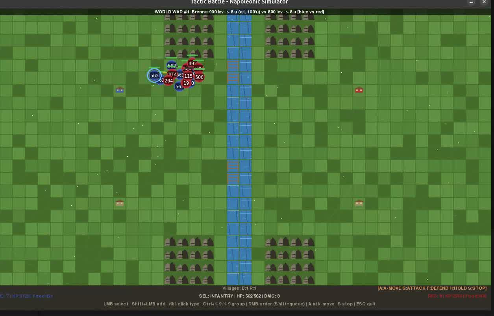
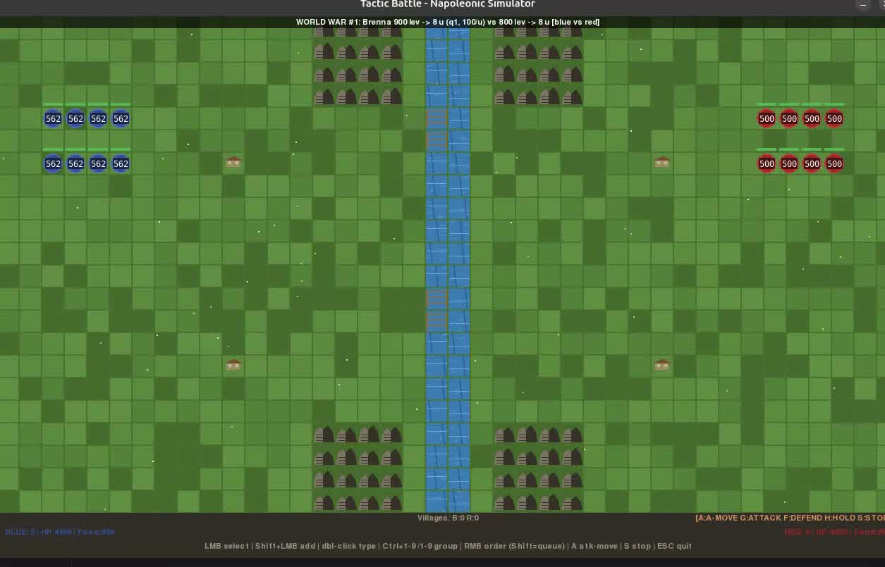
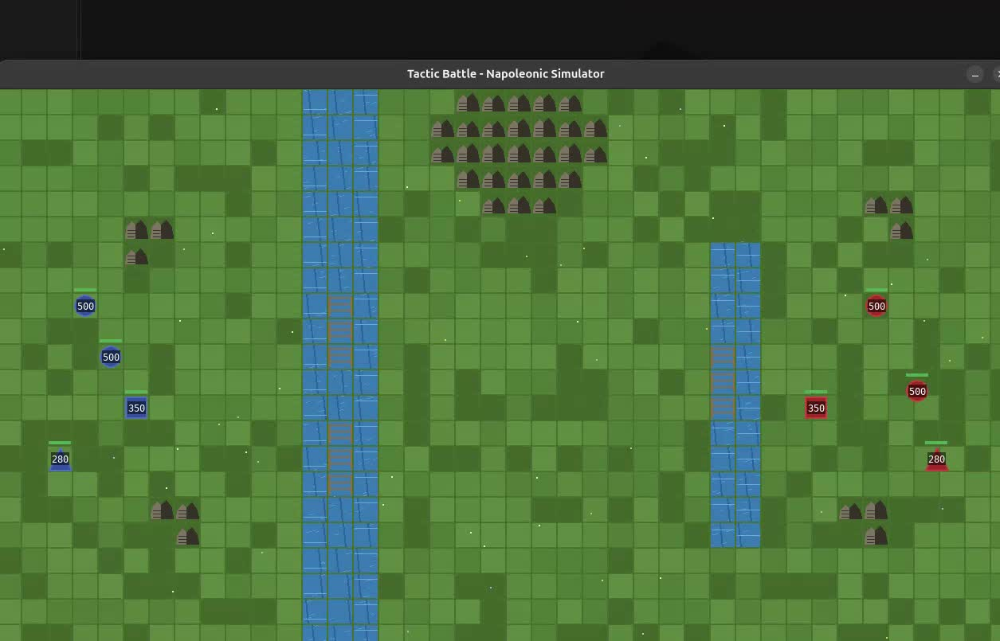
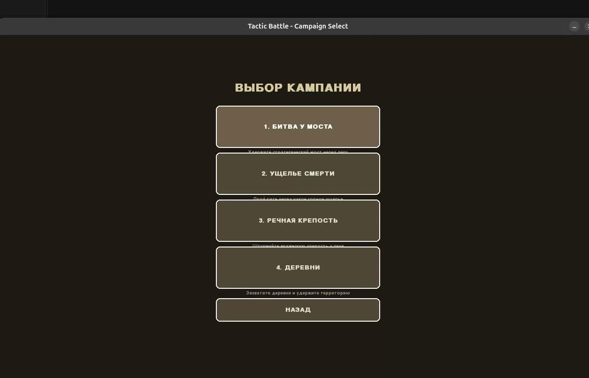

Тактикалық шайқас
3 юнит түрі (Жаяу әскер, Атты әскер, Садақшылар), типтік артықшылық матрицасы, сарбаз саны, шабуыл қашықтығы және соқтығысу.
A* іздеу, типтік артықшылық шайқасы, ауылды басып алу, дипломатиясы бар әлем картасы және ML-агентпен ауыстыруға болатын модульді ИИ бар 2D RTS.
Барлығы жергілікті жұмыс істейді. Бұлт, API кілттері жоқ.
3 юнит түрі (Жаяу әскер, Атты әскер, Садақшылар), типтік артықшылық матрицасы, сарбаз саны, шабуыл қашықтығы және соқтығысу.
Ауылды басып алып тамақ өндіріңіз, әр 3 минутта тегін жаяу әскер шақырыңыз, жабдық шегі 1000.
Тау мен өзенді айналып өтетін, көпір арқылы өтетін ландшафтқа бейімделген маршрут.
3 ұлт, 50 провинция, 6 генерал, дипломатия (Соғыс/Бейтарап/Достық/Одақ), ИИ қарсыластар.
Тактикалық топтау, қапталдау, орында тұру, шегіну және ауылды басып алу логикасы бар күй машинасы.
Кез келген платформада X11 forward немесе headless режим арқылы GUI.
Өзіндік ландшафт пен мақсаты бар 4 қолмен жасалған миссия.
Өзен мен тау қапталдары бар стратегиялық көпір үшін қорғаныс/шабуыл.
Тар тау шатқалы, тар жолдармен өту.
Өзен мен тау қорғанысының артындағы жау бекінісіне шабуыл.
Экономикалық артықшылық үшін 6 ауылды басып алып ұстау.
RTS стиліндегі пернетақта және тышқан.
Сол жақ батырма таңдау, Shift+батырма қосу, қораппен таңдау, қос басу түр бойынша.
Оң жақ батырма қозғалу/шабуыл. A шабуыл-қозғалыс, G фокус, H ұстау, F қорғаныс, S тоқтату.
Ctrl+1..9 топ тағайындау, 1..9 қайта шақыру, Ctrl+0 ұмыту.
Сол жақ батырма генералды таңдау/жылжыту, Space кезек аяқтау, Tab дипломатия, WASD айналдыру.
Space қашықтық көрсету, R қайта бастау, N келесі миссия, Esc таңдаудан шығу.
Әр ауыл 20 тамақ/сек, юнит 5 тамақ/сек, шек 1000.
MVC бөлінісі: config, map, units, AI, engine, pathfinding тәуелсіз модульдер.
config.py тұрақтылар, enum, түстер, юнит статистикасы, шайқас матрицасы
map.py TacticalMap: тайл торы, ландшафт, ауылдар
pathfinding.py ландшафт құнын ескеретін A*
units.py Unit: соқтығысу, pathfinder, шайқас
ai.py UnitAI + AIController (FSM + Minimax мақсат таңдау)
minimax.py Minimax + Alpha-Beta (4-апта)
engine.py ойын циклі, көп таңдау, тамақ, ауыл, HUD
main.py / menu кіру нүктесі, мәзірлер, кампания таңдау
campaigns.py 4 миссия анықтамасы
world_data.py 50 провинция, 3 ұлт, өзендер, граф
world_map.py полигон көрсету, қозғалыс, авто-басып алу/шайқас
diplomacy.py WAR/NEUTRAL/FRIENDLY/ALLIANCEdocs/screenshots/ қалтасына PNG файлдарын қойыңыз — олар осында пайда болады.

Тактикалық шайқас

Шайқас қақтығысы

Ауылды басып алу

Әлем картасы

ИИ қозғалысы

Басты мәзір
Типтік артықшылық матрицасы бар үш юнит түрі.
Түрі HP Жылд. Шабуыл Қашық. Артықшылық
Жаяу әскер 500 1.8 8 1.2 теңгерімді
Атты әскер 350 3.2 14 1.4 Садақшыларды жеңеді (1.5x)
Садақшы 280 1.5 6 5.0 қашықтан атадыСиллабустың әр тақырыбы кодта қалай іске асырылған.
Ландшафт құнын ескеретін, диагональ қозғалыс, тауды айналып өту және көпір арқылы өту бар торлы A*. Юнит соқтығысуын push-apart арқылы ескереді.
Күйлер: Idle, Group Up, Move, Hold, Attack, Flank, Capture, Retreat. Жаяу әскер шабуыл алдында топтасады, атты әскер қапталдайды, садақшылар орында тұрады.
Қарсыластық мақсат таңдау: ИИ қарсылас ең жақсы қарсы шабуылды таңдайды деп болжайды. Alpha-Beta beta <= alpha болғанда бұтақтарды қысқартады.
Юнитті ауылға жылжытып басып алу. ИИ экономикалық артықшылық үшін бейтарап/жау ауылдарын бірінші кезекте алады.
Юниттер 35% денсаулықтан төмен болғанда шегінеді, шектеулі рұқсатпен, содан кейін қайта кіреді. Тұрақты шегінуді және шексіз шайқасты болдырмайды.
Жау генералдары әр кезекте автономды қозғалады және шабуылдайды. Бейтарап аумақты авто-басып алу, жау аумағында авто-шайқас.
Юнит, интеграция және шеткі жағдайлар бойынша 924 тест.
TestConfig, TestTacticalMap, TestVillages, TestPathfinding,
TestUnit, TestUnitCollision, TestAI, TestCampaigns,
TestFoodSystem, TestIntegration, TestEdgeCases, TestDiplomacy,
TestWorldData, TestWorldMap, TestImports, TestWorldMapTopology,
TestWorldMapInit, TestMinimax (9)Дайын API емес, нақты код арқылы іске асырылған.
Жау, одақтас және ауыл ортасына реакция беретін Idle / Group Up / Move / Hold / Attack / Flank / Capture / Retreat күйлері бар күй машинасы.
Ландшафт құнын ескеретін, диагональ қозғалыс, тауды айналып өту және көпір арқылы өту бар A* іздеу.
Қарсылас ең жақсы қарсы шабуылды таңдайды деп болжап, ең жақсы жау мақсатын таңдайтын Alpha-Beta қысқартуы бар Minimax.
git clone https://github.com/Tleukhanov/TacticBatle.git
cd TacticBatle
pip install pygame-ce
python main.pydocker compose --profile headless up --build арқылы Docker (headless) қолжетімді.
2–3 минуттық геймплей. Репозиторийде жазу нұсқаулығы бар.
2–3 минут геймплей: шайқастар, A* іздеу, ИИ шайқасы, ауылды басып алу, әлем картасы.
Юнит, интеграция және шеткі жағдайлар бойынша 924 тест өтті.
python -m pytest -v